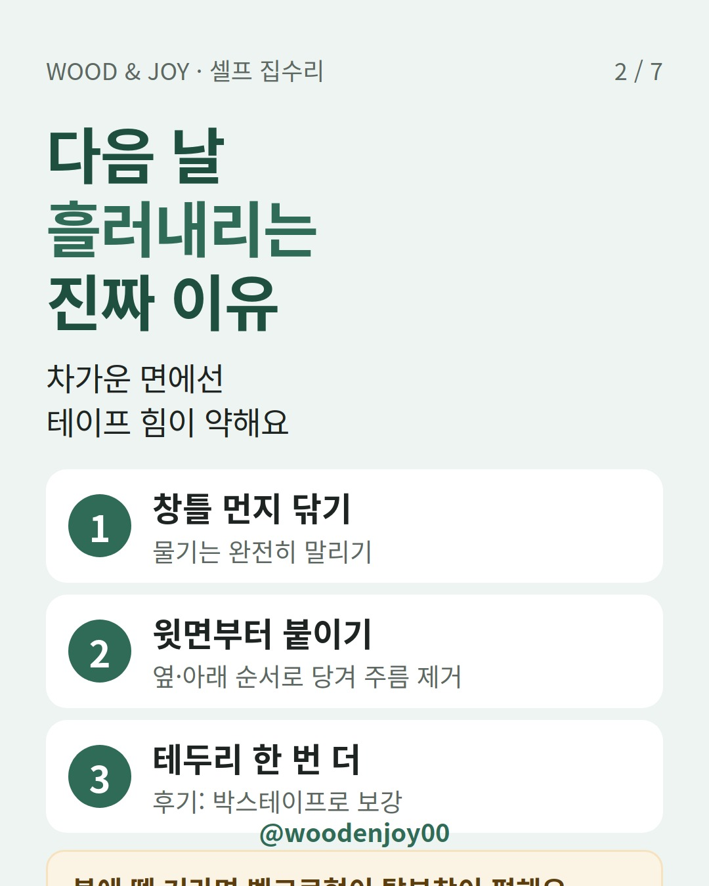
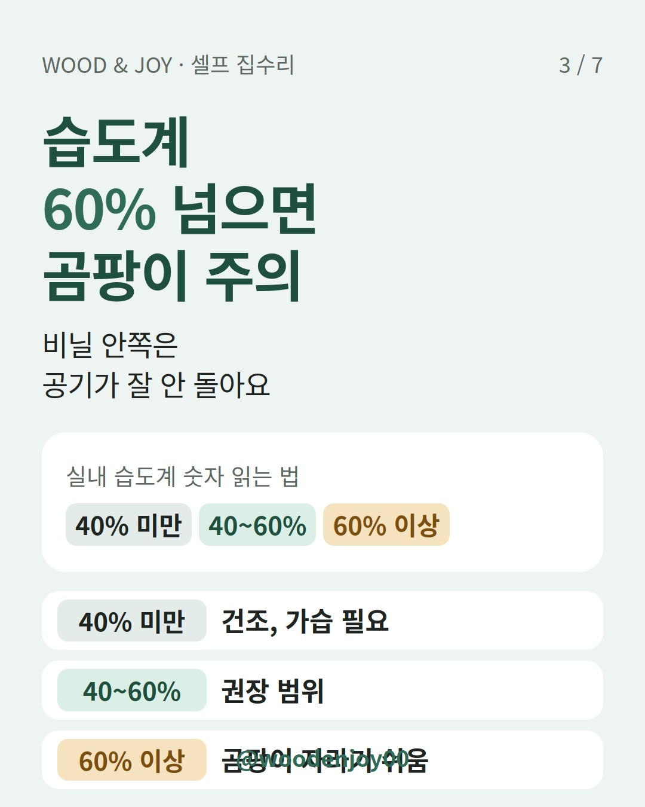
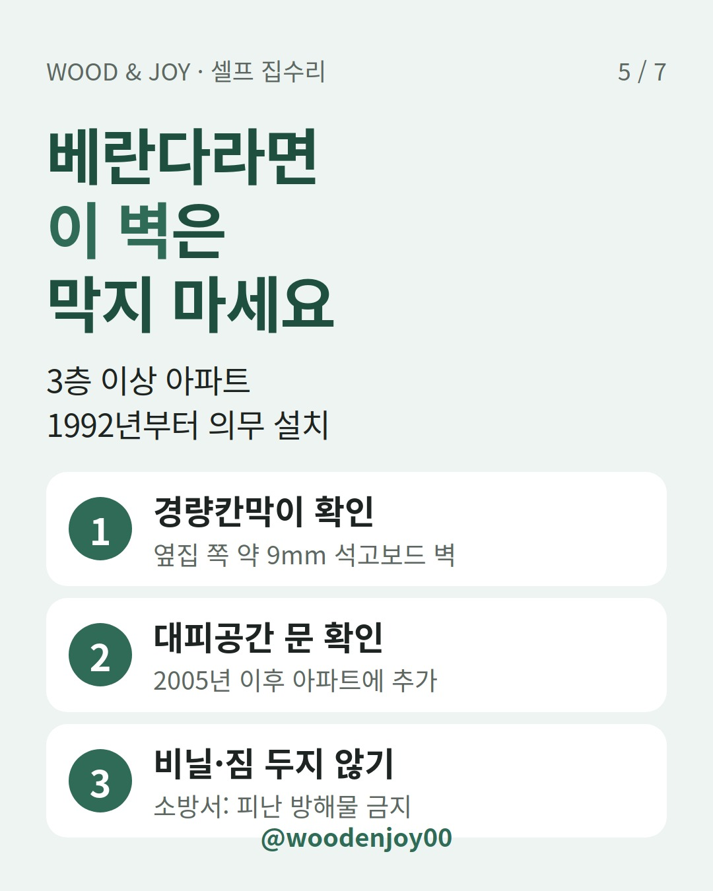

이 포스팅은 쿠팡 파트너스 활동의 일환으로, 이에 따른 일정액의 수수료를 제공받습니다.
창문 틈으로 찬바람이 들어와서 방풍비닐부터 장바구니에 담으셨나요? 붙이는 일은 하루면 끝나요. 진짜 문제는 그 뒤 석 달입니다. 비닐 안쪽이 꽉 막히면 물방울이 맺히고, 그 물이 오래 머물면 곰팡이와 냄새가 생기기 쉬워요.
결론부터 말할게요. ① 창틀을 완전히 말린 뒤 윗면부터 붙이고 ② 실내 습도는 40~60%, 환기는 하루 3번 30분 이상 하고 ③ 베란다라면 경량칸막이·대피공간은 비닐로 막지 마세요. 이 세 가지만 지키면 됩니다.
세 가지 다 '외풍차단' 제품이지만 막는 대상이 달라요. 방풍비닐은 창틀 틈새로 드나드는 바람길을 통째로 덮는 제품이에요. 뽁뽁이(에어캡)는 유리에 붙여서 공기층으로 냉기가 전해지는 걸 줄이고요.
| 구분 | 방풍비닐 | 뽁뽁이(에어캡) | 문풍지 |
|---|---|---|---|
| 주로 막는 것 | 창틀 전체 틈으로 드는 바람 | 유리를 타고 오는 냉기 | 특정 틈 한두 곳 |
| 붙이는 곳 | 창틀 바깥 테두리 | 유리면 | 문·창의 틈 부위 |
| 조심할 점 | 밀폐되면 결로·곰팡이 | 유리 결로는 계속 확인 | 문이 뻑뻑해지지 않게 |
뽁뽁이를 붙이면 몇 도가 오른다는 숫자는 실험마다 달라요. 한 시사 프로그램 실험에선 실내 온도가 1~3도 높아졌다고 했고, YTN이 보도한 실험에선 창문 표면온도가 15.3도에서 18.1도로 올랐어요. 측정한 대상(실내 공기인지 유리 표면인지)과 조건이 달라서 우리 집에서도 똑같이 오른다고 보긴 어렵습니다.
바람이 어디서 들어오는지 모르겠다면 비닐부터 사지 말고 틈부터 찾으세요. 찾는 방법은 문풍지 사기 전에, 향 하나로 바람 들어오는 틈부터 찾으세요에 정리해 뒀어요.
가장 흔한 실수예요. 한 사용 후기에서도 두꺼운 양면테이프를 썼는데 아침에 보니 비닐이 흘러내려 있었다고 해요. 붙이는 면이 차가워서 접착력이 떨어진 거죠. 양면테이프 같은 감압 접착제는 원래 낮은 온도에서 붙는 힘이 약해집니다.
붙이기 팁: 창틀과 유리를 깨끗이 닦고 '완전히' 말린 뒤 붙이세요. 윗면을 먼저 일자로 붙이고 옆, 아래 순서로 당기면 주름과 틈이 줄어요.

방풍비닐과 창 사이가 밀폐되면 공기가 돌지 않아 표면이 쉽게 젖어요. 비 오는 날, 빨래를 실내에 너는 날엔 더 심해지고요. 그래서 습도계 하나가 비닐보다 중요할 수도 있습니다.
| 실내 습도 | 상태 | 할 일 |
|---|---|---|
| 40% 미만 | 건조 | 가습 |
| 40~60% | 권장 범위 | 유지 |
| 60% 이상 | 곰팡이가 자라기 쉬움 | 환기·제습, 창틀 물기 닦기 |
서울시 실내공기질 안내는 겨울 실내를 18~21℃, 습도 40%로 제시하고 자연환기는 오전·오후·저녁 하루 3번, 30분 이상을 권해요. 지퍼형 방풍비닐이라면 환기할 때 지퍼를 열어 비닐 안쪽 습기도 같이 빼 주세요.
창 아래로 물이 줄줄 흐른다면 결로 흡수 테이프도 방법이에요. 최근 기사에 따르면 다이소에서 2000원대에 팔고 있어요. 다만 결로 자체를 없애는 게 아니라 흐르는 물을 받아내는 제품입니다.

베란다 창 전체를 비닐로 두르는 집이 많은데, 여기서 놓치기 쉬운 게 피난시설이에요. 1992년 7월 이후 3층 이상 아파트 발코니에는 옆집과의 경계벽을 쉽게 부술 수 있는 경량칸막이(약 9mm 석고보드)를 의무로 설치했어요. 2005년 이후로는 세대마다 대피공간, 2008년부터는 하향식 피난구가 추가됐습니다.
소방서들은 이 경량칸막이 앞에 수납장을 놓거나 물건을 쌓지 말라고 꾸준히 당부해요. 현관 쪽에서 불이 나면 이 벽이 탈출구가 되거든요. 방풍비닐이나 단열재로 이 벽과 대피공간 문을 덮지 않도록, 붙이기 전에 위치부터 확인하세요.

비닐 붙이기와 틈 막기는 셀프로 충분해요. 바람 드는 곳이 틈 한두 군데뿐이라면 방풍비닐까지 갈 필요 없이 문풍지로 끝날 수도 있습니다. 👉 문풍지 보러 가기 (쿠팡 파트너스 활동으로 일정액의 수수료를 받을 수 있어요.)
현관문으로 바람이 든다면 문이 끝까지 안 닫히는 건 아닌지도 보세요. 도어클로저 속도 조절, 현관문이 덜 닫힐 때 나사 2개만 보세요
이럴 땐 셀프 범위를 넘어선 거예요.
Q. 방풍비닐을 붙이면 창문은 못 여나요?
지퍼형은 지퍼를 열고 환기할 수 있어요. 일반형이라면 한쪽 모서리를 떼었다 붙일 수 있게 벨크로로 고정하는 방법이 있어요.
Q. 뽁뽁이랑 같이 붙여도 되나요?
같이 쓰는 집도 있어요. 막는 대상이 다르니까요. 대신 그만큼 더 밀폐되니 습도계를 더 자주 보세요.
Q. 떼고 나면 테이프 자국이 남나요?
테이프 종류와 창틀 마감에 따라 달라요. 자국이 걱정된다면 벨크로가 미리 붙어 나오는 제품이 편합니다.